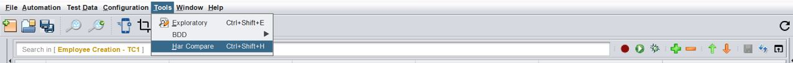
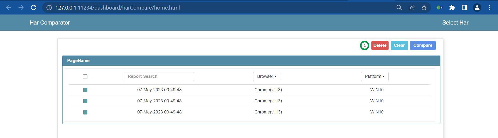
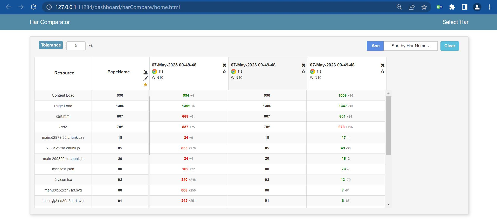

WebPage Performance Testing
We can analyse the performance of a Web Page by using some built-in actions. The tool generates an information-rich performance report which is very handy to visualize which resource consumed how much time.
Additionally, there is an option to compare HAR files and even set benchmarks.
HAR is the short form for HTTP ARchive format, which tracks all the logging of web browser's interaction with a site. HAR files can be a requirement for troubleshooting issues specifically for problems such as performance and page rendering.
Actions
capturePageTimings
Description: This action captures page navigation and resource timings parameters of the web page last opened or navigated to and stores it in the Performance Report and HAR file.
Input Format : @PageName
Usage
| ObjectName | Action | Input | Condition | Reference | |
|---|---|---|---|---|---|
| Browser | capturePageTimings | @value | PageName | << Hardcoded Input | |
| Browser | capturePageTimings | Sheet:Column | PageName | << Input from Datasheet | |
| Browser | capturePageTimings | %dynamicVar% | PageName | <<Input from variable |
Internally uses:
var pt=performance.timing;
var t={};
t.title=document.title;
t.url=window.location.href;
for(var k in pt){t[k]=pt[k];}
t.toJSON=undefined;
return JSON.stringify(t);
ClearCache
Description: Clears browser's data, for example cookies.
Usage:
| ObjectName | Action | Input | Condition | Reference |
|---|---|---|---|---|
| Browser | ClearCache |
Corresponding Code:
@Action(object = ObjectType.BROWSER, desc = "To delete all the cookies", input = InputType.NO)
public void ClearCache() {
try {
Driver.manage().deleteAllCookies();
Report.updateTestLog(Action, "Cookies Cleared", Status.DONE);
} catch (Exception e) {
Report.updateTestLog(Action, "Failed to clear cookies", Status.DONE);
}
}
Create HAR files
-
Use the action
capturePageTimingson strategic pages -
Navigate to Configuration>Run Settings and check the Performance Reporting check box under the Run settings tab.

-
Once this configuration is saved, run your test set and post the execution you will get a report.Expand the report by clicking on your test case and this time the console icon on the bottom right will change into the Performance Report icon.
-
To launch the performance report click on the Performance Report icon.

- The table and graph view contains the har files generated post execution.Click on them to get the various page and resource timings parameters captured by the capturePageTimings action.

Compare Har Files
- To Compare your Har files, navigate to Tools>Har Compare and you will be redirected to the Har Comparator site.

- Here you compare the Har files that you have in your project.

- You can and also set benchmarks for achieving standards.
